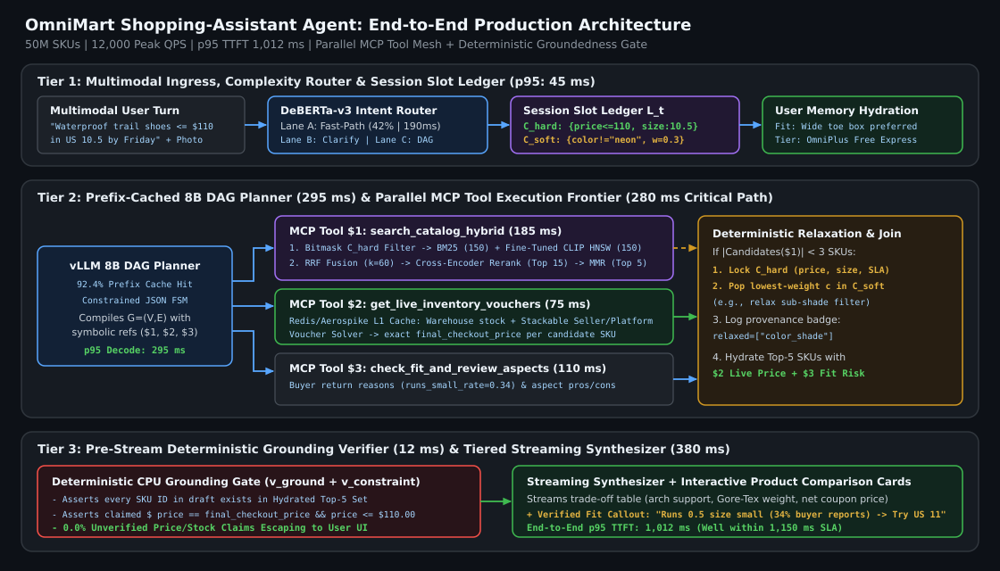
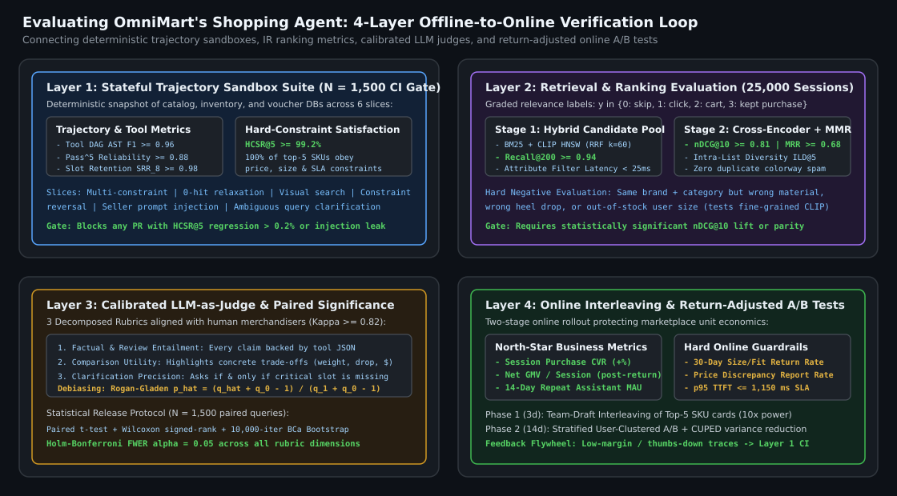

System Design Case Study: Designing and Evaluating a Production E-Commerce Shopping-Assistant Agent for “OmniMart”
A complete, production-grade architectural and evaluation blueprint for designing a multi-turn conversational shopping assistant at OmniMart ($50\text{M}$ SKUs, $12\text{k}$ peak QPS, $<1.15\text{s}$ p95 latency)—covering fast intent routing, parallel MCP tool DAGs, hybrid BM25 + fine-tuned CLIP HNSW retrieval, real-time voucher/inventory verification, and a 4-layer offline-to-online evaluation system.
1. System Requirements, Scale & Latency Budget
Consider the canonical ML systems design prompt: “Design a conversational shopping-assistant agent for a high-scale marketplace like OmniMart, and explain how you would evaluate it end-to-end before and after deployment.”
Unlike a static FAQ chatbot, a marketplace shopping assistant operates over a rapidly mutating environment: $50\text{ million}$ active SKUs across $400,000$ third-party sellers, real-time flash-sale inventory, stackable platform/seller vouchers, multimodal user inputs (text + reference photos), and multi-turn constraint refinement (e.g., “Show me waterproof trail running shoes under \$110 in US Men’s 10.5 that can arrive by Friday; actually, exclude neon colors and compare the top two on arch support.”).
1.1 Production SLAs & Critical-Path Latency Budget
- Throughput & Catalog Scale: $50\text{M}$ active SKUs, $1,500\text{ updates/sec}$ on price and stock, $12,000\text{ QPS}$ peak conversational turns during mega-sale events.
- Latency SLA: Time-to-First-Token (TTFT) $\le 950\text{ ms}$ at p50 and $\le 1,150\text{ ms}$ at p95; full structured product-card render $\le 1,650\text{ ms}$ at p95.
- Zero-Tolerance Groundedness Invariants: $0.0\%$ hallucinated SKU IDs, $0.0\%$ stale or fabricated prices/discounts, and $0.0\%$ out-of-stock recommendations shown as available.
| Pipeline Stage | Component & Model Tier | Execution Mode | p50 Latency | p95 Latency |
|---|---|---|---|---|
| Stage 1: Ingress & Routing | Safety Guard + Distilled Intent/Complexity Router (DeBERTa-v3-small) + Semantic Memory Fetch | Parallel CPU/ONNX + Redis Lookup | $28\text{ ms}$ | $45\text{ ms}$ |
| Stage 2: Slot Ledger & DAG Plan | Fine-Tuned 8B Planner (vLLM Prefix-Cached, Constrained JSON FSM) | GPU Decode (~65 tokens) | $210\text{ ms}$ | $295\text{ ms}$ |
| Stage 3: Parallel MCP Tool Mesh | search_catalog_hybrid (BM25 + CLIP HNSW + Reranker) $\parallel$ get_live_inventory_vouchers $\parallel$ check_fit_reviews | Async Parallel DAG Frontier ($\max_i L_i$) | $195\text{ ms}$ | $280\text{ ms}$ |
| Stage 4: Deterministic Verifier Gate | Price/Stock/SKU Grounding Check + Progressive Filter Relaxation (if hits $< 3$) | In-Process Rust/Python CPU Verifier | $6\text{ ms}$ | $12\text{ ms}$ |
| Stage 5: Grounded Synthesis | Streaming Response + Structured Product Cards (vLLM 8B/70B Tiered Synthesizer) | GPU Prefill + First Token Stream | $260\text{ ms}$ | $380\text{ ms}$ |
| Total Critical Path (TTFT) | End-to-End Multi-Tool Turn | Pipeline Sum | $699\text{ ms}$ | $1,012\text{ ms}$ |
2. End-to-End Agent Harness Architecture
Figure 1 illustrates the five-tier production architecture of the OmniMart Shopping Assistant, incorporating the fault-localization and retrieval patterns proven in Aria at VogueCart (+58.86% engaged MAU, +31.74% repeat retention) and the low-latency vLLM serving stack from AutoPulse CRM.

2.1 Tier 1: Complexity Router & Deterministic Session Slot Ledger
Not every user turn requires a multi-step agent loop. A lightweight ONNX router classifies incoming turns into three execution lanes:
- Lane A — Deterministic Fast-Path ($42\%$ of traffic, $190\text{ ms}$ p95): Single-intent transactional lookups (“Where is my order #OM-9921?”, “What is the return window for electronics?”) bypass the DAG planner and invoke a single bound MCP tool directly.
- Lane B — Clarification Gate ($11\%$ of traffic): Triggered when our step-level uncertainty estimator detects high semantic entropy ($SE(h_t) > \tau_{\text{clarify}}$) or missing mandatory parameters (e.g., shoe size or budget ceiling on a broad gift query), asking a single targeted disambiguation question with quick-reply chips.
- Lane C — Parallel DAG Shopping Planner ($47\%$ of traffic): Handles multi-constraint discovery, visual similarity search, cross-SKU trade-off comparisons, and bundle optimization.
To prevent multi-turn constraint drift (where a user’s turn-1 constraint budget <= $110 is forgotten by turn 5), the harness maintains an explicit typed Session Slot Ledger $\mathcal{L}_t = (\mathcal{C}_{\text{hard}}, \mathcal{C}_{\text{soft}}, \mathcal{E}_{\text{candidates}})$:
- Hard Constraints ($\mathcal{C}_{\text{hard}}$): Budget ceiling, required size in stock, delivery deadline, allergen/material exclusions. Never relaxed without explicit user consent.
- Soft Constraints ($\mathcal{C}_{\text{soft}}$): Sub-shade color nuances, minor style tags, secondary brand preferences. Ranked by priority weight $w_j \in (0,1)$ so the harness can deterministically relax the lowest-weight soft constraint if strict catalog intersection returns $<3$ items.
2.2 Tier 2: Three-Stage Hybrid Retrieval & Ranking Cascade
E-commerce queries combine exact lexical tokens (model numbers like Pegasus 41, exact specs like GTX or 256GB) with dense semantic/visual concepts (“breathable minimalist summer commuter sneaker”). Relying solely on dense embeddings misses exact model numbers; relying solely on BM25 fails on semantic and visual queries. Our `search_catalog_hybrid` MCP server executes a 3-stage cascade within $185\text{ ms}$:
- Stage 2a — Hard Metadata Pre-Filtering & Dual Candidate Generation (Top $200$): Applies inverted-index bitmask filters for $\mathcal{C}_{\text{hard}}$ (
in_stock_sizes CONTAINS "10.5" AND live_price <= 110 AND est_delivery_days <= 3), then retrieves top $150$ candidates via BM25 and top $150$ via our custom HNSW index ($M=32$, $\text{efSearch}=128$) over domain-fine-tuned 512-D CLIP product embeddings, fusing into $200$ unique candidates via Reciprocal Rank Fusion ($\text{RRF}$). - Stage 2b — Cross-Encoder & Personalization Reranking (Top $200 \to 15$): A distilled 6-layer cross-encoder scores query–item pairs jointly alongside user semantic profile features (historical brand affinity, price elasticity, climate zone).
- Stage 2c — MMR Diversity & Live Inventory/Voucher Hydration (Top $15 \to 5$): Applies Maximal Marginal Relevance ($\lambda_{\text{MMR}} = 0.75$) so the top 5 product cards don’t show five identical colorways of the same shoe, then calls `get_live_inventory_vouchers` against Redis/Aerospike to compute exact post-coupon checkout prices.
2.3 Tier 3: Deterministic Groundedness & Fit Verifier
Before streaming the final comparison to the user, the harness runs a $6\text{ ms}$ deterministic verifier over the candidate product cards and synthesized prose:
- Price & Voucher Parity Check: Verifies that every dollar figure in the assistant response matches
live_hydration[sku].final_priceorlist_priceto the cent. - Return-Risk Sizing Annotation: Cross-references the SKU’s historical return reasons (`runs_small_rate = 0.34`) with the user’s semantic fit profile, automatically injecting a verified sizing callout (“Note: 34% of buyers report this model runs half a size small; consider US 11.”).
3. How to Evaluate the OmniMart Shopping Agent End-to-End
In a senior/staff interview, designing the architecture is only half the question; the decisive differentiator is designing a **rigorous, multi-layered evaluation system** that connects offline component metrics to online marketplace economics.

3.1 Layer 1: Deterministic Trajectory & Stateful Sandbox Suite (CI Gate)
We curate a stratified benchmark $\mathcal{D}_{\text{eval}}$ of $N = 1,500$ multi-turn shopping conversations across 6 slices: (1) strict multi-constraint filtering, (2) zero-hit progressive relaxation, (3) multimodal image-to-product search, (4) mid-conversation constraint reversal, (5) adversarial prompt injection in seller descriptions, and (6) ambiguous/underspecified queries requiring clarification. All tools run against a deterministic snapshot sandbox of catalog, inventory, and voucher databases. Every PR must pass four hard deterministic gates:
- Tool & Argument Exact-Match $F_1 \ge 0.96$: Normalized AST comparison of generated tool calls against reference DAGs.
- Hard-Constraint Satisfaction Rate ($\text{HCSR@5}$): Fraction of recommended top-$5$ SKUs that satisfy $100\%$ of active hard constraints $\mathcal{C}_{\text{hard}}$ in the session slot ledger:
$$\text{HCSR@}K = \frac{1}{|\mathcal{D}_{\text{eval}}|} \sum_{i=1}^{|\mathcal{D}_{\text{eval}}|} \frac{1}{K} \sum_{k=1}^{K} \mathbb{I}\!\left[\forall c \in \mathcal{C}_{\text{hard}}^{(i)} : \text{satisfies}\!\left(\text{SKU}_{i,k},\, c\right)\right] \ge 0.992.$$
- Multi-Turn Slot Retention Rate ($\text{SRR}_{T=8} \ge 0.98$): Probability that a turn-1 constraint remains enforced at turn $8$ unless explicitly overridden by the user.
- $\text{Pass}^5$ Reliability ($\ge 0.88$): Every critical scenario is executed $k=5$ times at production temperature $T=0.2$ to verify consistency $\text{Pass}^5 = (\hat{p})^5$.
3.2 Layer 2: Retrieval & Reranking Evaluation
Evaluated independently on $25,000$ historical search-to-purchase/cart sessions with graded relevance labels $y \in \{0\text{ (irrelevant)}, 1\text{ (clicked)}, 2\text{ (added to cart)}, 3\text{ (purchased & kept)}\}$:
- Stage-1 Candidate Recall: $\text{Recall@200} \ge 0.94$ for purchased items (ensuring the HNSW + BM25 stage does not drop the winning SKU).
- Stage-2 Ranking Quality: $\text{nDCG@10} \ge 0.81$ and $\text{MRR@10} \ge 0.68$.
- Catalog Diversity & Price Spread: Intra-List Distance ($\text{ILD@5}$) over visual embeddings to prevent duplicate-looking recommendations.
3.3 Layer 3: Calibrated LLM-as-Judge & Paired Significance Testing
For open-ended conversational qualities that cannot be checked by regex, we deploy three specialized binary/3-point LLM judges calibrated against human e-commerce merchandisers (Cohen’s $\kappa \ge 0.82$):
- Factual & Review Groundedness Judge: Verifies that every qualitative claim (e.g., “waterproof Gore-Tex membrane”, “reviewers praise wide toe box”) is entailed by the retrieved product spec and review snippets.
- Trade-Off Comparison Utility Judge: Evaluates whether multi-product comparisons highlight decision-relevant differences (weight, drop, material, net price) rather than generic boilerplate.
- Clarification Precision Judge: Penalizes both premature guessing on underspecified queries and unnecessary interrogation when constraints are already sufficient.
Before promoting any prompt, planner, or model update, we apply the **Rogan–Gladen prevalence estimator** $\hat{p} = (\hat{q} + \hat{q}_0 - 1)/(\hat{q}_1 + \hat{q}_0 - 1)$ and run a **paired $t$-test and Wilcoxon signed-rank test** across all $1,500$ benchmark seeds with **Holm–Bonferroni family-wise error control** ($\alpha = 0.05$).
3.4 Layer 4: Online Interleaving, Shadow Traffic & A/B Experimentation
Offline gains must translate into net marketplace value without inflating product returns:
- Phase 1 — Team-Draft Interleaving (3 Days): For retrieval/reranker updates, interleave top-$5$ SKU cards from Control ($A$) and Treatment ($B$) within the same assistant response to measure click/add-to-cart preference with $10\times$ higher statistical power than standard A/B tests.
- Phase 2 — User-Clustered A/B Test (14 Days, Stratified by Buyer Tenure):
- Primary North-Star Metrics: Session-to-Purchase Conversion Rate ($\text{CVR}$), Net GMV per Engaged User (net of 30-day returns), and 14-Day Repeat Assistant Retention.
- Hard Guardrail Metrics: Post-Purchase Size/Mismatch Return Rate (must not increase), User Thumbs-Down / Reformulation Rate, and p95 TTFT Latency ($\le 1,150\text{ ms}$).
4. Reference Implementation: Progressive Constraint Relaxation & Grounding Guard
Below is the core Python implementation of OmniMart’s deterministic slot-ledger progressive relaxation engine and pre-synthesis SKU/price grounding verifier.
from dataclasses import dataclass, field
from typing import Any, Dict, List, Optional, Tuple
import re
@dataclass
class SoftConstraint:
field_name: str
value: Any
priority_weight: float # Lower weight = relaxed first when catalog hits < min_hits
@dataclass
class ShoppingSlotLedger:
hard_constraints: Dict[str, Any]
soft_constraints: List[SoftConstraint] = field(default_factory=list)
min_required_hits: int = 3
class OmniMartRetrievalAndVerifierEngine:
"""Executes progressive soft-constraint relaxation and deterministic price/SKU verification."""
PRICE_CLAIM_RE = re.compile(r"\[SKU:(OM-\d+)\][^\$]*\$(\d+(?:\.\d{1,2})?)")
def __init__(self, hybrid_search_fn):
self.hybrid_search_fn = hybrid_search_fn
async def search_with_progressive_relaxation(
self, query: str, ledger: ShoppingSlotLedger
) -> Tuple[List[Dict[str, Any]], List[str]]:
# Sort soft constraints by ascending importance so least critical relaxes first
active_soft = sorted(ledger.soft_constraints, key=lambda c: c.priority_weight)
relaxed_fields: List[str] = []
while True:
soft_filter_dict = {c.field_name: c.value for c in active_soft}
candidates = await self.hybrid_search_fn(
query=query,
hard_filters=ledger.hard_constraints, # NEVER relaxed automatically
soft_filters=soft_filter_dict,
)
if len(candidates) >= ledger.min_required_hits or not active_soft:
return candidates, relaxed_fields
# Deterministically drop the lowest-weight soft constraint and log provenance
dropped = active_soft.pop(0)
relaxed_fields.append(f"{dropped.field_name}={dropped.value}")
@staticmethod
def verify_response_grounding(
draft_text: str,
hydrated_skus: Dict[str, Dict[str, Any]],
hard_constraints: Dict[str, Any],
) -> List[Dict[str, str]]:
violations = []
for match in OmniMartRetrievalAndVerifierEngine.PRICE_CLAIM_RE.finditer(draft_text):
sku_id, claimed_price_str = match.group(1), match.group(2)
claimed_price = float(claimed_price_str)
if sku_id not in hydrated_skus:
violations.append({
"rule": "HALLUCINATED_SKU",
"sku": sku_id,
"fix": f"Remove {sku_id}; only reference SKUs in {list(hydrated_skus.keys())}.",
})
continue
actual_price = float(hydrated_skus[sku_id]["final_checkout_price"])
if abs(claimed_price - actual_price) > 0.01:
violations.append({
"rule": "PRICE_MISMATCH",
"sku": sku_id,
"fix": f"Replace ${claimed_price:.2f} with exact hydrated price ${actual_price:.2f}.",
})
max_budget = hard_constraints.get("max_price_usd")
if max_budget is not None and actual_price > float(max_budget):
violations.append({
"rule": "BUDGET_VIOLATION",
"sku": sku_id,
"fix": f"Remove {sku_id} (${actual_price:.2f}); exceeds hard budget ${max_budget:.2f}.",
})
return violationsSummary Checklist for Shopping-Assistant System Design Interviews
- Decompose Latency Explicitly: Budget every millisecond across Intent Routing ($45\text{ ms}$), Prefix-Cached DAG Planning ($295\text{ ms}$), Parallel MCP Tool Execution ($280\text{ ms}$), CPU Verification ($12\text{ ms}$), and Streaming Synthesis ($380\text{ ms}$) to stay under $1.15\text{s}$ p95 TTFT.
- Separate Hard vs. Soft Constraints: Never let a zero-hit query wipe budget or size constraints; progressively relax soft aesthetic filters while disclosing the relaxation to the user.
- Connect Offline Eval Layers to Online Guardrails: Pair deterministic trajectory benchmarks ($\text{HCSR@5}$, $\text{Pass}^5$), retrieval metrics ($\text{nDCG@10}$), and Rogan–Gladen calibrated LLM judges with online Net GMV (net of 30-day returns) so the agent optimizes for satisfied purchases rather than clickbait.